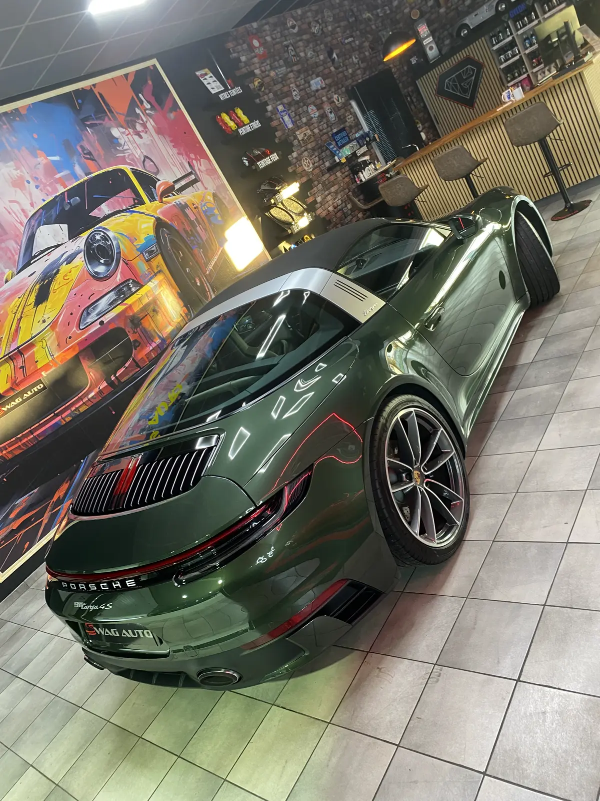

Brillance & Protection
Lustrage et rénovation de carrosserie à Nancy
Redonnez vie à la peinture d'origine de votre véhicule. Polissage professionnel GYEON, traitement sur mesure selon l'état de votre carrosserie. Brillance miroir garantie.
Technique & Précision
Un traitement sur mesure pour une finition impeccable
Votre carrosserie a perdu de son éclat ? Les micro-rayures, voiles ternes et défauts visuels altèrent l'apparence de votre véhicule au fil du temps. Grâce à notre service de lustrage professionnel, redonnez vie à la peinture d'origine et retrouvez une brillance miroir, tout en rehaussant la valeur perçue de votre voiture.
Chaque étape est réalisée avec rigueur : lavage et décontamination du véhicule, lustrage et polissage contrôlé. Le choix de produits haut de gamme GYEON et des gestes experts assurent un rendu uniforme et sans défaut.
Notre équipe adapte le traitement à l'état de votre peinture pour corriger les défauts visuels sans altérer la couche d'origine. N'hésitez pas à nous rendre visite afin de vous établir un devis précis.
Demandez un devis gratuit
Pourquoi faire un lustrage professionnel ?
Rénovation, préservation et valorisation
Rénovation esthétique
Atténuez les défauts visibles : micro-rayures, traces d'oxydation, voiles ternes, hologrammes. Résultat immédiat et spectaculaire.
Préservation de la carrosserie
Un bon lustrage combiné à une protection cire ou céramique vous permet de garder un résultat impeccable durablement.
Valorisation du véhicule
Un aspect brillant et soigné donne une meilleure image à votre voiture, que ce soit pour votre plaisir ou pour une revente.